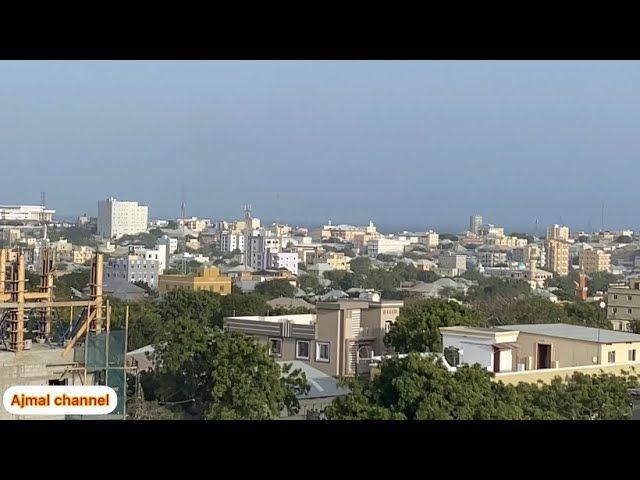
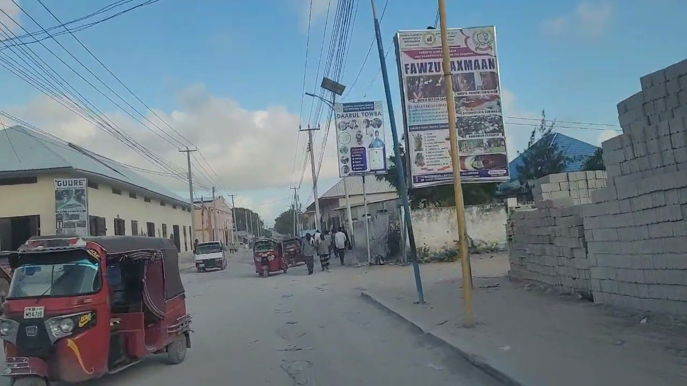

wax yaabaha astaanteda ah waxaa kamid ah
- masaajido
- masaajidada uga caansan waxaa kamid ah masjidka Alhuda iyo kuwo kale
- iskuulo
- Xoosh waxaa ku yaalo iskuulo badan waxaa kamid ah Alsafa School
- isbitaalo
- waxey kaloo leedehay isbitaalo looga adeego bulshada sida Gargaar Hospital
Shacab ka ku nool:
shacabka ku nool waa shacab badan kooda iska fiican oo deriskooda xaqiisa ilaali, inkastoo kuwo xuna iska joogaan
Amnigeeda:
Xoosh waa xaafad aan amnigeda fiicney sabab too ah waxaa ku badan tuugo shacabka dhaco.
 >  >